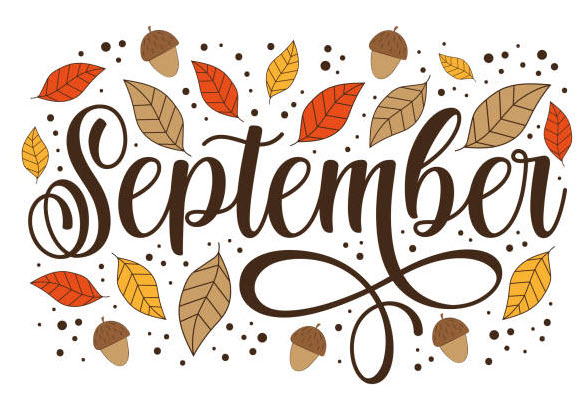

September 2025

Kultur- och fritidsnämnden - september 2025
Struktur: HTML5 (semantisk), extern CSS och JavaScript. Återanvänd teknik från quiz.html men utan att ändra den filen.
quiz.html
Quiz: Kultur- och fritidsnämnden september 2025
Frågor och fördjupade förklaringar hämtade ur kommunens rapporter:
Teoretisk grund för tillitsbaserat ledarskap och tillförlitlig organisering:
I löptext används citat med sidnummer enligt referenserna ovan.